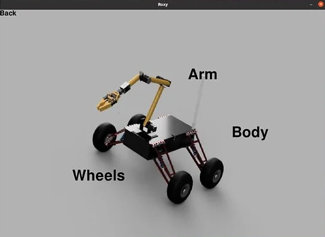
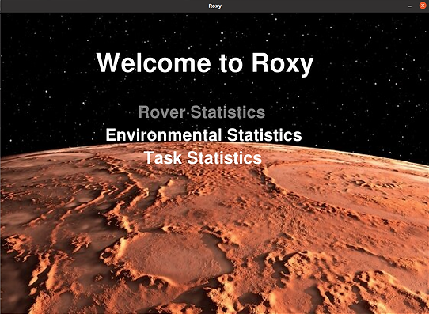
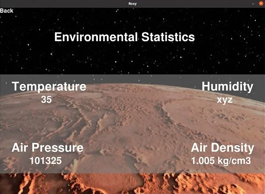
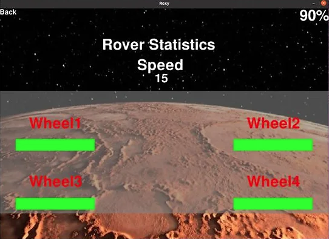

During the challenging times of the pandemic, when the world was cautiously emerging from the first lockdown, an exciting opportunity came my way. Along with a group of friends, I began an internship at a robotics startup founded by one of our alumni. It was here where we discovered the Canadian International Rover Challenge (CIRC), an event that immediately captured our collective imagination as aspiring engineers.
Driven by curiosity and a shared passion for engineering, I took the initiative to form Team Kosmos, a university rover team, and assumed the role of its leader. Despite facing significant financial constraints and limited resources due to the pandemic, our team successfully navigated the preliminary round of CIRC. We achieved this by constructing an innovative multi-terrain autonomous rover equipped with a 5-DOF robotic manipulator. Although the pandemic led to the postponement of the main event, preventing our participation, our journey didn’t end there. We transitioned to mentorship roles, passing our knowledge and prototype to the enthusiastic juniors who followed in our footsteps.
Our team, defined by its high motivation and dedication, blurred the lines between different engineering departments. We rapidly upskilled, adapting to the needs of the project. This experience honed my skills in analytical thinking and strategic decision-making, particularly in resource optimization.
The development of our prototype rover, guided by the principles of Efficiency, Accuracy, and Reliability, was an adventure in rapid prototyping and system design. My specific contribution centered on leading the software and electronics department. I developed the logic and code for a range of functionalities, from manual teleoperation to complex tasks like controlling the robotic arm through inverse kinematics and integrating various sensors for telemetry. A key decision in this journey was to centralize the system’s operation, for which I learned and implemented the Robot Operating System (ROS).
One of my first achievements was establishing basic teleoperation of the rover, utilizing differential drive commands published on a ROS topic and executed through a C++ node on an Arduino Microcontroller. This setup allowed for seamless control and communication between the base-station computer and the rover.
Collaboratively, we tackled the complexities of the robotic arm, starting with precise control of joint angles using encoder data and PID controllers. The culmination of this effort was successfully solving the Inverse Kinematics problem and integrating the solution into our system.
Additionally, I spearheaded the integration of an Xbox Kinect V1 as the rover’s primary visual system, exploiting ROS’s capabilities to handle video feed and 3D point cloud data. This decision significantly enhanced our rover’s environmental feedback capabilities.
My involvement wasn’t limited to software; I also actively participated in designing the rover’s power system. This included establishing redundancies to ensure uninterrupted power supply to various components, a crucial aspect for the rover’s functionality.
   
Despite the setbacks caused by recurring lockdowns, our team’s progress, although delayed, laid a strong foundation for future teams. We designed the rover not just for a single competition but as a versatile tool for various challenges, embodying our shared aspirations and curiosity.
This journey at the robotics startup was more than an internship; it was a pivotal experience that shaped my approach to problem-solving and team leadership in the field of robotics engineering.